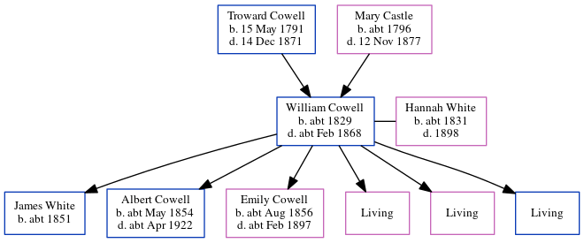

William Cowell c1829 - c1868
[ Home ] | [ Calendar ] | [ Surnames Index ] | [ Errors ] | [ Family History ]A carter and the child of Troward Cowell (an agricultural labourer) and Mary Castle, William Cowell, the three times great-uncle of Nigel Horne, was born in Wingham, Kent, England c. 18291,2,3,4,5, was baptised there on 12 Jul 1829 and married Hannah White (with whom he had 6 children: James, Albert, Emily Hannah, Sarah Ann, Susannah and William, along with 3 surviving children) in Bridge, Kent, England around Nov 18507.
During his life, he was living at Wingham Well in Wingham on 6 Jun 18418, at his birthplace in 18512, and at Chalk Pit in Wingham on 7 Apr 18619.
He died c. Feb 1868 in Eastry, Kent, England4,5,6 and was buried in Wingham on 26 Mar 18685.
Parents
- Troward was born on 15 May 1791
- Mary was born c. 1796
Children
- James was born c. 1851
- Albert was born c. May 1854
- Emily Hannah was born c. Aug 1856
Citations
- 1841 England Census Online publication - Provo, UT, USA: The Generations Network, Inc., 2006.Original data - Census Returns of England and Wales, 1841. Kew, Surrey, England: The National Archives of the UK (TNA): Public Record Office (PRO), 1841. Data imaged from the National
- 1851 England Census Online publication - Provo, UT, USA: The Generations Network, Inc., 2005.Original data - Census Returns of England and Wales, 1851. Kew, Surrey, England: The National Archives of the UK (TNA): Public Record Office (PRO), 1851. Data imaged from the National
- 1861 England Census Online publication - Provo, UT, USA: The Generations Network, Inc., 2005.Original data - Census Returns of England and Wales, 1861. Kew, Surrey, England: The National Archives of the UK (TNA): Public Record Office (PRO), 1861. Data imaged from the National
- England & Wales, FreeBMD Death Index: 1837-1915 Online publication - Provo, UT, USA: The Generations Network, Inc., 2006.Original data - General Register Office. England and Wales Civil Registration Indexes. London, England: General Register Office. © Crown copyright. Published by permission of the Cont
- England, Select Deaths and Burials, 1538-1991 Ancestry.com Operations, Inc.
- England & Wales deaths 1837-2007 - Findmypast
- England & Wales Marriages 1837-2005 - Findmypast
- 1841 England, Wales & Scotland Census - Findmypast (was age 13 and the son of the head of the household)
- 1861 England, Wales & Scotland Census - Findmypast (was age 31 and the head of the household)
Media
England & Wales marriages 1837-2008 - BMD/M/1850/4/AL/000493/012
England & Wales deaths 1837-2007 - BMD/D/1868/1/AZ/000071/048
1851 England, Wales & Scotland Census Transcription - GBC-1851-0005915476
1841 England, Wales & Scotland Census - GBC/1841/0013985843
Family Tree
Map
Generated by ged2site. Last updated on Jul 3, 2024
Known Issues
Location for 6 Jun 1841 (Wingham Well, Wingham, Kent, England) differs from mother's (Wingham Well, Kent, England)
6 Jun 1841: Not living with either parent in childhood when aged 12
May have been living with father on 1851, but the addresses don't match or aren't detailed enough to be sure